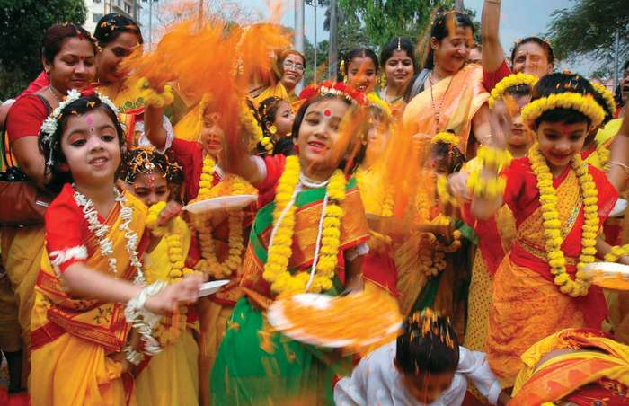

|
INDIAN FESTIVAL AND TOURISM PVT.LTD |
 |

Holi
Holi, Hindu spring festival celebrated throughout North India on the full-moon day of Phalguna (February–March). Participants throw coloured water and powders on one another, and, on this one day only, license is given for the usual rankings of caste, gender, status, and age to be reversed. In the streets the celebrations are often marked by ribald language and behaviour, but at its conclusion, when everyone bathes, dons clean white clothes, and visits friends, teachers, and relatives, the ordered patterns of society are reasserted and renewed.

Krishna; Radha
Krishna; Radha
Celebration of Spring by Krishna and Radha; 18th-century miniature; in the Guimet Museum, Paris (MS 1832).
Courtesy of the Musée National des Arts Asiatiques - Guimet, Paris; photograph, Lavaud
Holi is particularly enjoyed by worshippers of the god Krishna. Its general frivolity is considered to be in imitation of Krishna’s play with the gopis (wives and daughters of cowherds). In Vraja (modern Gokul), rituals of reversal culminate in a battle in which the women of the natal village of Radha, Krishna’s eternally devoted lover, pummel the men of Krishna’s village with staves; the men defend themselves with shields. In the Dolayatra (“Swing Festival”), images of the gods are placed on decorated platforms and are swung to the accompaniment of cycles of songs sung only in the spring season. In many locales, celebrants kindle an early morning bonfire that represents the burning of the demoness Holika (or Holi), who was enlisted by her brother, Hiranyakashipu, in his attempt to kill his son Prahlada because of the latter’s unshakable devotion to Vishnu. The burning of Holika prompts worshippers to remember how Vishnu (in the form of a lion-man, Narasimha) attacked and killed Hiranyakashipu, vindicating both Prahlada and Vishnu.